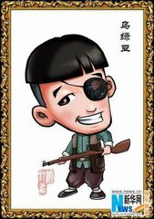
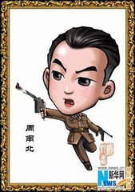
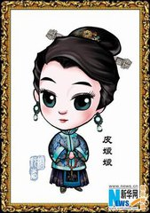
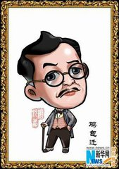
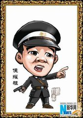
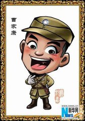

<!DOCTYPE html>
<html>
	<head>
		<meta charset="UTF-8">
		<title></title>
		<style>
			*{
				margin: 0;
				padding: 0;
			}
			#list{
				width:888px;
				height:900px;
				background: #fff;
				list-style: none;
				-webkit-user-select: none; 
			}
			#list li{
				float:left;
				width:159px;
				height:240px;
				margin-left:50px;
				margin-top: 50px;
			}
			#btn{
				width:200px;
				height:40px;
				font:20px/40px "微软雅黑";
				margin-left:350px ;
			}
		</style>
		<script src="js/MTween3.js"></script>
		<script>
			window.onload = function(){
				var btn = document.getElementById("btn");
				var list = document.getElementById("list");
				
				var str = [1,2,3,4,5,6,7,8,9,10,11,12]
				var arr = [];
				for(var n = 0; n < str.length; n++){
					list.innerHTML +='<li></li>'
				}
				var listLi = list.getElementsByTagName("li");
				//获取listLi原始的top和left的值（距离）
				for(var i = 0; i < listLi.length; i++){
					arr.push({
						left:listLi[i].offsetLeft,    //获取left值
						top:listLi[i].offsetTop        //获取top值
					})
				}
				//给listLi添加定位，让每个listLi还保持在原位
				for(var j = 0; j < listLi.length; j++){
					listLi[j].style.position = "absolute";   //给listLi添加定位
					listLi[j].style.left = arr[j].left+"px";  //设置listLi的left的值
					listLi[j].style.top = arr[j].top+"px";    //设置listLi的top值
					listLi[j].style.margin = 0;               //设置listLi的margin值
				}
				btn.addEventListener("click",function(){
					//防止狂点
					for(var i = 0; i < listLi.length; i++){
						if(listLi[i].timer) return;
					}
					//随机打乱数组
					var arr1 = arr.sort(function(){
					 	return Math.random()-0.5;    //取随机数（0~1之间的小数，不包括0）
					});
					for(var j = 0; j < listLi.length; j++){
						//运动
						MTween(listLi[j],{left:arr1[j].left,top:arr1[j].top},500,"linear")
					}
				},false)
				
				
				//获取到元素本身的大小以及相对于视口的位置
				function fn(obj){
					return obj.getBoundingClientRect();
				}
				function fun(obj,obj1){
					//获取obj的上下左右
					var objL = fn(obj).left;
					var objR = fn(obj).right;
					var objT = fn(obj).top;
					var objB = fn(obj).bottom;
					//获取obj1的上下左右
					var obj1L = fn(obj1).left;
					var obj1R = fn(obj1).right;
					var obj1T = fn(obj1).top;
					var obj1B = fn(obj1).bottom;
					//判断没有碰上的区域
					if(objR < obj1L || objL > obj1R || objB < obj1T || objT > obj1B ){
						return false;
					}else{
						return true;
					}
				}
				var l = 0;
				//给li绑定mousedown事件
				for(var n = 0; n < listLi.length; n++){
					listLi[n].index = n;
					listLi[n].addEventListener("mousedown",function(ev){
						var disX = ev.clientX - this.offsetLeft;
						var disY = ev.clientY - this.offsetTop;
						//记录绑定mousedown事件元素的坐标
						var liLeft = this.offsetLeft;
						var liTop = this.offsetTop;
						this.style.zIndex = "10";
						//把碰到的元素都放在数组中
						var newArr = [];
						var num = +Infinity;
						var obj = null;
						l = this.index;
						//鼠标移动
						list.onmousemove = function(ev){
							//防止狂点
							for(var k = 0; k < listLi.length; k++){
								if(listLi[k].timer){
									list.onmousemove = null;
									document.onmouseup = null;
									return;
								};
							}
							var X = ev.clientX - disX;
							var Y = ev.clientY- disY;
							//判断边界
							if(X < 0) X = 0;
							if(Y < 0) Y = 0;
							if(X > list.offsetWidth - listLi[l].offsetWidth){
								X = list.offsetWidth - listLi[l].offsetWidth;
							}
							if(Y > list.clientHeight - listLi[l].offsetHeight){
								Y = list.clientHeight - listLi[l].offsetHeight;
							}
							listLi[l].style.left = X + "px";
							listLi[l].style.top = Y + "px";
							newArr.length = 0;
							num = +Infinity;
							obj = null;
							for(var n = 0; n < listLi.length; n++){
								fun(listLi[l],listLi[n])
								//判断有没有碰撞到元素
								if(fun(listLi[l],listLi[n])){
									//排除自己
									if(listLi[n] !== listLi[l]){
										newArr.push(listLi[n]);
									}
								}
								//找到拖动元素的中心点
								var circleX = fn(listLi[l]).left + listLi[n].offsetWidth/2;
								var circleY = fn(listLi[l]).top + listLi[n].offsetHeight/2;	
							}
							for(var m = 0; m < newArr.length; m++){
								//找到被碰撞元素的中心点
								var circle1X = fn(newArr[m]).left + newArr[m].offsetWidth/2;
								var circle1Y = fn(newArr[m]).top + newArr[m].offsetHeight/2;
								//计算次幂
								var siteX = Math.pow(Math.abs(circleX - circle1X),2);
								var siteY = Math.pow(Math.abs(circleY - circle1Y),2);
								var s = siteX + siteY;
								if(num > s){
									num = s;
									obj = newArr[m]		
								}
							}
						}
							//鼠标抬起
							document.onmouseup = function(){
								
								//判断有没有被碰撞的元素
								if(obj){
									//记录被碰撞元素的坐标
									var objLeft = obj.offsetLeft;
									var objTop = obj.offsetTop;
									//运动
									MTween(obj,{left:liLeft,top:liTop},500,"linear");
									MTween(listLi[l],{left:objLeft,top:objTop},500,"linear",function(){
										for(var j = 0; j < listLi.length; j++){
											listLi[j].style.zIndex = "1";
										}
									})
								}else{
									//运动
									MTween(listLi[l],{left:liLeft,top:liTop},500,"linear",function(){
										for(var j = 0; j < listLi.length; j++){
											listLi[j].style.zIndex = "1";
										}
									})
								}
								list.onmousemove = null;
								document.onmouseup = null;	
							}
						ev.preventDefault();
					},false)
				}
			}
		</script>
	</head>
	<body style="background: #ccc">
		<ul id="list">
			<!--<li></li>
			<li></li>
			<li></li>
			<li></li>
			<li></li>
			<li></li>
			<li></li>
			<li></li>
			<li></li>
			<li></li>
			<li></li>
			<li></li>-->
		</ul>
		<input type="button" value="随机" id="btn" />
	</body>
</html>
